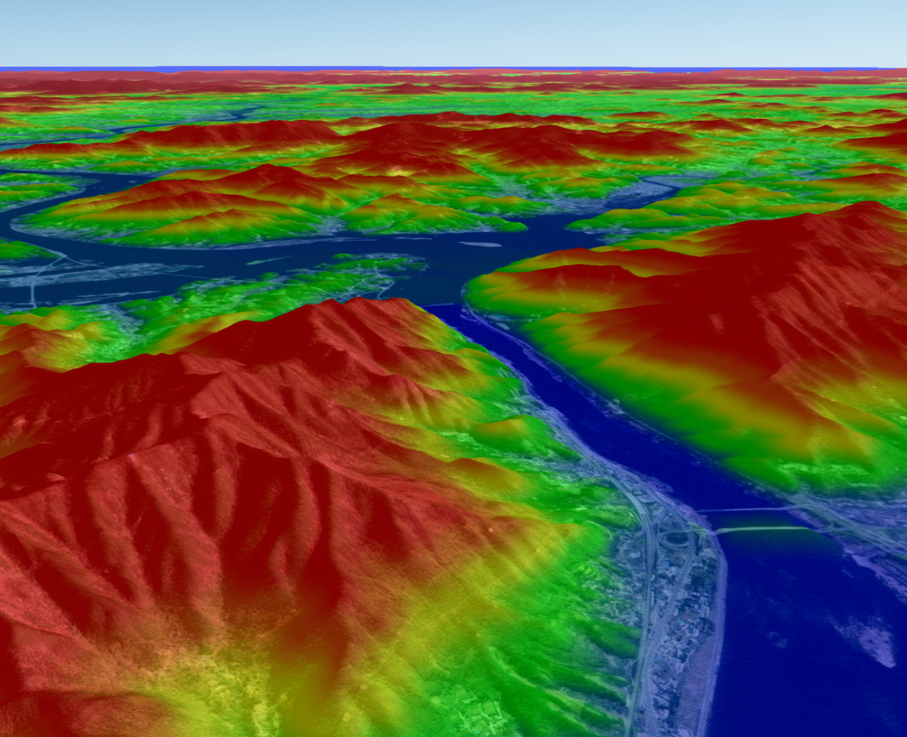
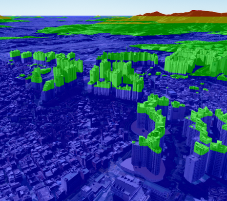
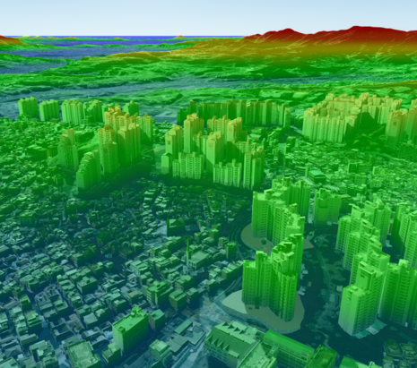
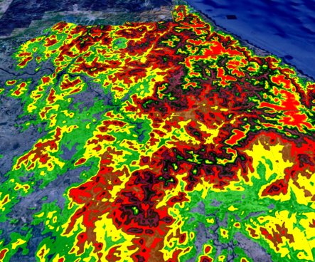
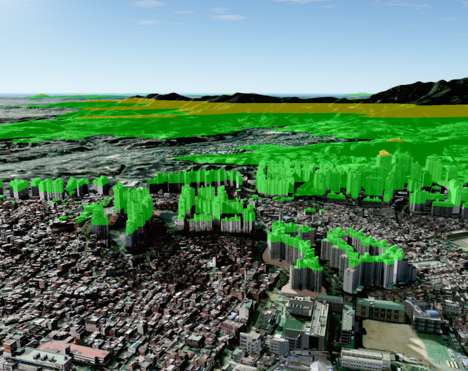

고도 범례 시작하기
목차

고도 범례는 지형과 3D 객체의 고도에 따라 화면 색상을 다르게 적용하는 후처리 기능입니다.UAnalyHeight에 고도별 색상과 투명도를 설정하고 높이 색상 가시화를 켜면 지도에서 고도 구간을 구분할 수 있습니다.
이 문서의 예제는 app이 생성되고 초기화된 상태를 전제로 합니다.
범례 설정값을 편집하는 HTML 패널은 애플리케이션에서 별도로 만들며, 실제 지도 색상은 UAnalyHeight가 적용합니다.
1. 고도 범례 표시하기
app.getAnalysis('Height')로 고도 분석 객체를 가져온 뒤 setUserStyle()에 범례 스타일을 전달합니다.
스타일 적용에 성공하면 setHeightVisible(true)를 호출해 고도 색상을 화면에 표시합니다.
setHeightVisible()은 클릭 위치의 고도를 측정하는 active() 상태와 별개입니다.
범례 색상만 표시할 때는 고도 분석을 클릭 측정 모드로 활성화할 필요가 없습니다.
API
U3dApp.getAnalysis(name) : 이름에 해당하는 분석 객체를 반환하는 함수
매개변수
name(string) : 분석 이름. 고도 범례는'Height'사용. 필수
반환값
return(UAnaly) : 요청한 분석 객체
API
UAnalyHeight.setUserStyle(style) : 고도 기준별 색상과 표현 모드를 설정하는 함수
매개변수
style(Record<string, string>) :mode와 고도 기준별 RGBA 색상을 가진 객체. 필수
반환값
return(boolean) : 스타일 설정 성공 여부
API
UAnalyHeight.setHeightVisible(visible) : 고도 색상 가시화 여부를 설정하는 함수
매개변수
visible(boolean) :true면 표시하고false면 숨김. 필수
반환값
return(boolean) : 가시화 설정 성공 여부
1. 기본 고도 범례 예제
스타일 객체의 숫자 키는 고도 기준값(m)이고 값은 해당 기준에 적용할 CSS RGBA 색상입니다.
숫자 키는 전달 순서와 관계없이 고도 오름차순으로 처리됩니다.

const heightAnalysis = app.getAnalysis('Height');
if (!heightAnalysis) {
throw new Error('Height 분석 객체를 찾을 수 없습니다.');
}
const heightStyle = {
mode: 'band',
'0': 'rgba(0, 0, 255, 0.5)',
'100': 'rgba(0, 255, 0, 0.5)',
'200': 'rgba(255, 255, 0, 0.5)',
'300': 'rgba(255, 149, 40, 0.5)',
'400': 'rgba(255, 0, 0, 0.5)'
};
if (!heightAnalysis.setUserStyle(heightStyle)) {
throw new Error('고도 범례 스타일을 적용하지 못했습니다.');
}
if (!heightAnalysis.setHeightVisible(true)) {
throw new Error('고도 범례를 표시하지 못했습니다.');
}
setUserStyle()은 전달받은 객체를 복사해 저장합니다.
적용 후 heightStyle을 수정해도 화면은 바뀌지 않으므로 변경한 스타일을 다시 setUserStyle()에 전달해야 합니다.
2. 범례 스타일 설정하기
범례 스타일은 mode, 고도 기준값, 색상과 투명도로 구성합니다.
사용할 수 있는 mode는 'band'와 'mix'입니다.
| 모드 | 표현 방식 |
|---|---|
'band' | 각 고도 기준부터 다음 기준 직전까지 하나의 색상을 유지 |
'mix' | 인접한 두 고도 기준 사이의 색상과 투명도를 부드럽게 보간 |
첫 기준값보다 낮은 고도에는 첫 색상이 적용되고 마지막 기준값보다 높은 고도에는 마지막 색상이 적용됩니다.
RGBA의 alpha는 원래 화면 색상 위에 범례 색상을 섞는 비율이며, 0이면 원래 색상이 보이고 1이면 범례 색상이 완전히 적용됩니다.
숫자 형태의 고도 항목은 최대 UAnalyHeight.MAX_STYLE_ENTRIES개까지 사용할 수 있으며 현재 최대값은 256입니다.mode가 'band' 또는 'mix'가 아니거나 최대 항목 수를 초과하면 setUserStyle()은 false를 반환합니다.
1. 구간 색상으로 스타일링하는 예제
const bandStyle = {
mode: 'band',
'0': 'rgba(20, 70, 180, 0.35)',
'150': 'rgba(20, 180, 110, 0.45)',
'300': 'rgba(250, 200, 40, 0.55)',
'600': 'rgba(220, 50, 40, 0.7)'
};
const applied = heightAnalysis.setUserStyle(bandStyle);
if (!applied) {
console.warn('band 범례 스타일이 유효하지 않습니다.');
}
2. 색상 그라데이션으로 스타일링하는 예제
같은 기준값을 사용하면서 mode만 'mix'로 바꾸면 고도 사이의 색상이 이어집니다.
const mixStyle = {
...bandStyle,
mode: 'mix'
};
if (!heightAnalysis.setUserStyle(mixStyle)) {
console.warn('mix 범례 스타일이 유효하지 않습니다.');
}


3. 투명 영역을 만드는 예제
특정 기준의 alpha를 0으로 설정하면 해당 색상은 원래 화면에 영향을 주지 않습니다.mix 모드에서는 인접 기준 사이의 alpha도 함께 보간됩니다.
heightAnalysis.setUserStyle({
mode: 'band',
'0': 'rgba(0, 80, 255, 0.6)',
'100': 'rgba(0, 0, 0, 0)',
'200': 'rgba(255, 210, 0, 0.5)',
'400': 'rgba(255, 40, 0, 0.8)'
});


3. 범례 항목 추가하고 제거하기
사용자가 범례를 편집하는 화면을 제공하려면 배열 하나를 원본 상태로 관리하고, 배열을 스타일 객체로 변환해 setUserStyle()에 다시 전달합니다.
화면의 DOM만 수정하면 실제 지도 색상은 바뀌지 않으므로 설정 배열과 UAnalyHeight를 함께 갱신해야 합니다.
다음 예제의 heightLegendConfig는 각 항목의 고도, 색상과 투명도를 보관합니다.applyHeightLegend()는 항목을 고도순으로 정렬하고 GeOnDT가 사용하는 스타일 객체로 변환합니다.
1. 편집 가능한 범례 상태 만들기
const heightLegendConfig = [
{value: 0, color: '#0000ff', opacity: 0.5},
{value: 100, color: '#00ff00', opacity: 0.5},
{value: 200, color: '#ffff00', opacity: 0.5},
{value: 400, color: '#ff0000', opacity: 0.5}
];
function hexToRgb(hex) {
const value = Number.parseInt(hex.replace('#', ''), 16);
return {
r: (value >> 16) & 255,
g: (value >> 8) & 255,
b: value & 255
};
}
function applyHeightLegend(mode = 'band') {
const style = {mode};
heightLegendConfig
.slice()
.sort((a, b) => a.value - b.value)
.forEach(({value, color, opacity}) => {
const {r, g, b} = hexToRgb(color);
style[String(value)] = `rgba(${r}, ${g}, ${b}, ${opacity})`;
});
return heightAnalysis.setUserStyle(style);
}
applyHeightLegend();
2. 범례 항목 추가 예제
function addHeightLegendItem(item) {
if (heightLegendConfig.some(({value}) => value === item.value)) {
return false;
}
heightLegendConfig.push(item);
return applyHeightLegend();
}
addHeightLegendItem({
value: 600,
color: '#9c27b0',
opacity: 0.6
});
3. 범례 항목 제거 예제
function removeHeightLegendItem(value) {
const index = heightLegendConfig.findIndex((item) => item.value === value);
if (index === -1) {
return false;
}
heightLegendConfig.splice(index, 1);
return applyHeightLegend();
}
removeHeightLegendItem(200);
색상이나 투명도를 변경할 때도 해당 배열 항목을 먼저 수정한 뒤 applyHeightLegend()를 호출합니다.
편집 UI를 함께 사용한다면 설정 배열 변경 후 화면의 범례 행도 다시 렌더링합니다.
4. 특정 객체를 범례에서 제외하기
setExceptObjects()를 사용하면 지정한 객체에는 고도 범례와 등고선 후처리가 적용되지 않아 객체 본래 색상이 유지됩니다.
제외 대상은 Three.js Object3D 또는 U3dComponentPosition이며 하나의 대상이나 배열을 전달할 수 있습니다.
Object3D를 전달하면 렌더링 시점에 그 하위 객체까지 함께 제외됩니다.U3dComponentPosition을 전달하면 해당 컴포넌트만 제외되며, 인스턴스 컴포넌트도 같은 형상을 공유하는 다른 인스턴스에는 영향을 주지 않습니다.
setExceptObjects()를 다시 호출하면 기존 제외 목록은 새 목록으로 교체됩니다.
기존 목록에 대상을 하나씩 더하려면 addExceptObject()를 사용합니다.
API
UAnalyHeight.setExceptObjects(objects) : 고도 후처리에서 제외할 대상 목록을 교체하는 함수
매개변수
objects(Object3D | U3dComponentPosition | Array<Object3D | U3dComponentPosition>) : 제외할 대상 또는 대상 배열. 필수
반환값
return(boolean) : 제외 목록 설정 성공 여부
API
UAnalyHeight.addExceptObject(object) : 기존 제외 목록에 대상 하나를 추가하는 함수
매개변수
object(Object3D | U3dComponentPosition) : 추가로 제외할 대상. 필수
반환값
return(boolean) : 추가 성공 여부
API
UAnalyHeight.removeExceptObject(object) : 제외 목록에서 대상 하나를 제거하는 함수
매개변수
object(Object3D | U3dComponentPosition) : 제외를 해제할 대상. 필수
반환값
return(boolean) : 목록에 있던 대상이 제거됐는지 여부
API
UAnalyHeight.clearExceptObjects() : 모든 제외 대상을 해제하는 함수
1. 컴포넌트 하나를 제외하는 예제
다음 예제는 animationLayer에 drone_01이라는 컴포넌트가 생성된 상태를 전제로 합니다.
const drone = animationLayer.getComponentByName('drone_01');
if (!drone) {
console.warn('제외할 드론을 찾을 수 없습니다.');
} else if (!heightAnalysis.setExceptObjects(drone)) {
console.warn('드론을 고도 범례에서 제외하지 못했습니다.');
}
2. 컴포넌트와 비행 경로를 함께 제외하는 예제
컴포넌트를 제외해도 별도로 만든 비행 경로 객체가 자동으로 제외되지는 않습니다.
드론과 경로를 모두 원래 색상으로 표시하려면 두 대상을 함께 전달합니다.
다음 예제의 flightPathMesh는 비행 경로를 그리는 Object3D라고 가정합니다.
const drone = animationLayer.getComponentByName('drone_01');
const exceptObjects = [drone, flightPathMesh].filter(Boolean);
if (exceptObjects.length !== 2) {
console.warn('제외할 드론 또는 비행 경로가 아직 준비되지 않았습니다.');
} else if (!heightAnalysis.setExceptObjects(exceptObjects)) {
console.warn('고도 범례 제외 목록을 설정하지 못했습니다.');
}
3. 제외 상태 변경 예제
다음 예제의 buildingMesh는 제외 목록에 추가하거나 제거할 Three.js Object3D입니다.
heightAnalysis.addExceptObject(buildingMesh);
heightAnalysis.removeExceptObject(buildingMesh);
heightAnalysis.clearExceptObjects();
5. 범례 상태 확인하고 종료하기
getUserStyle()은 현재 적용된 스타일의 복사본을 반환합니다.
반환 객체를 수정해도 실제 범례는 바뀌지 않으므로 변경 결과를 적용하려면 setUserStyle()을 다시 호출합니다.
범례 사용을 끝낼 때는 가시화를 끄고 제외 목록을 정리합니다.
분석 객체와 후처리 자원은 app이 관리하므로 UAnalyHeight를 직접 dispose하지 않습니다.
API
UAnalyHeight.getUserStyle() : 현재 고도 범례 스타일의 복사본을 반환하는 함수
반환값
return(Record<string, string> | undefined) : 현재 스타일 또는 설정되지 않은 경우undefined
API
UAnalyHeight.isHeightVisible() : 고도 색상이 현재 표시 중인지 반환하는 함수
반환값
return(boolean) : 고도 색상 가시화 여부
1. 현재 범례 스타일 변경 예제
const currentStyle = heightAnalysis.getUserStyle();
if (currentStyle) {
currentStyle.mode = 'mix';
heightAnalysis.setUserStyle(currentStyle);
}
2. 범례 종료 예제
heightAnalysis.clearExceptObjects();
heightAnalysis.setHeightVisible(false);